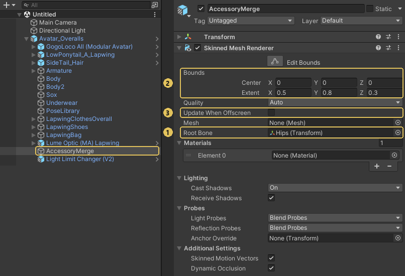
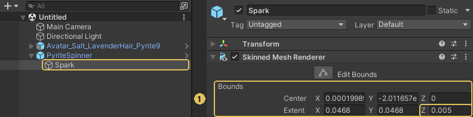
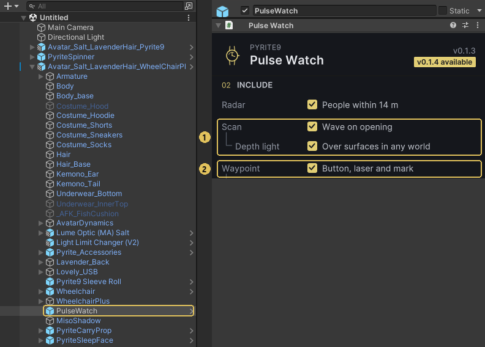
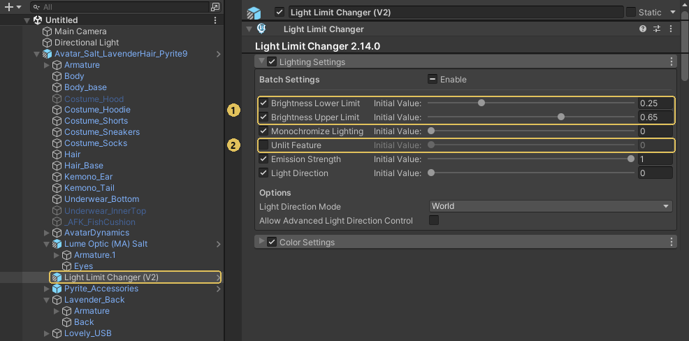

Unity 現場ノート
VRChat アバターを Unity で作りながらまとめたルールです。項目ごとに、守らないと何が起きるか、そしてどうすればよいかを書きました。
0 読み方
項目はどう読めばいいですか？
カードの一番上の質問 は、その症状があるときにこの項目を見てほしいという目印です。その下の太字の見出しがルールです。しないと にはルールを守らなかったときに実際に起きたことを、こうする にはそれを防ぐ方法を書きました。
バッジは何を意味しますか？
特に表示のない内容は、自分で経験して測って確かめたものです。原因を再現で確かめられなかったものには推定 、経験ではなく Unity の一般的な動作を説明したものには一般 を付けました。
ほかのバージョンでも当てはまりますか？
すべて上の環境で確かめたものなので、バージョンが違うと動作が異なる場合があります。パフォーマンスランクの上限は公式の表 で確認するのが確実です。
1 レンダリングレイヤー (Render Queue)
ここでいうレイヤーとは何ですか？
マテリアルの Render Queue の数値です。オブジェクトレイヤー（0〜31、4章 ）やアニメーターレイヤーとは別物です。この数値は描画順で、小さいものから描かれます。
なぜ順番が大事なのですか？
先に描いたものが深度（ZWrite）とステンシルを残し、後から描くものはその記録を見て描くかどうかを決めるからです。
Render Queue の区間 一般
数値 名前 ふつうここにあるもの
1000 Background 空のように最初に描くもの 2000 Geometry 不透明なもの。体、顔、顔に描かれた素の目 2450 AlphaTest カットアウト。アバターでは深度を書く半透明の髪をこのあたりに置くこともあります 2500 境界 2500 までは不透明として近いものから、2501 からは半透明として遠いものから描きます。半透明同士の距離はレンダラーの bounds の中心で測ります 3000 Transparent ガラス、水、エフェクト、一部の目のシェーダー 4000 Overlay すべての上に重ねるもの
目のシェーダーのキューを前髪の直前に移すと、前髪越しに目が見えます
直す前は顔 2000、前髪 2450、目 3000 の順に描くので、目が前髪の残した深度に遮られます。直した後は顔 2000、目 2449、前髪 2450 の順なので、前髪が目の上に半透明で重なります。
直す前
顔 2000
前髪 2450
半透明 + 深度を書く
目 3000
前髪の深度に遮られて消える
直した後
顔 2000
目 2449
前髪 2450
目の上に半透明で重なる
左から右へ描きます。目を前髪のすぐ前の番号に移すだけです。狭い画面では図を横にスクロールして見てください。
原則
キューは「誰が誰の深度とステンシルを見て描くべきか」で決めます。番号はすぐ前後に来る相手にくっつけて付け、間にほかのものが割り込む余地があれば間隔を空けます。
半透明の前髪越しに、目がまるごと消えていませんか？
1-1. 半透明越しに見えるべきものは、その半透明より先に描きます
しないと 前髪が深度を書く半透明（2450）で目のシェーダーが 3000 だと、目を描く番には前髪がもう深度を埋めた状態です。そのため前髪越しに透けるはずの目がまるごと抜けます。顔に描かれた素の目は 2000 なので問題がなく、目を替えてから初めて表に出ました。
こうする 目を前髪のすぐ前の番号（2449）に移します。キューを動かすと、間にあったものとの順番も変わります。ここでは 2460 にあった頬染め・涙エフェクトが目の上に乗るようになったので、周りのエフェクトまで確認し直しました。
Pyrite プロジェクトの Salt アバターです。① 目(Lume Optic)2449 ② 前髪 2450、ZWrite オン ③ 顔エフェクト(頬染め・涙)2460。目が前髪より一つ先に描かれます。 タップすると原寸で見られます。
遮蔽メッシュを入れたら、隠すべきでないものまで切れて見えていませんか？
1-2. 深度だけを書く遮蔽メッシュは、隠すべきもののすぐ前に置きます
しないと ボートの中に水が見えないよう、深度だけを書く遮蔽メッシュ（ColorMask 0、ZWrite On）を 2010 に置いたら、2450 のカットアウトのアバターより先に深度を書いてしまいました。その結果、ボートに立つ人の足が船べりの下で切れて見えました。
こうする
遮蔽メッシュを 2999 に移し、不透明とカットアウトをすべて描いた後、水（3000）の直前で深度を書くようにしました。ただし遮蔽メッシュより後に描かれるものは相変わらず隠れるので、3000 以上の半透明のアバター部位はボートの中で切れることがあります。
板の後ろを通るエフェクトだけを隠したいときも同じ方法を使います。板に深度を書かせ、エフェクトを板より後の番号に置けば済みます。ステンシルで切ると、板の手前を通る部分まで一緒に切れます。
半透明同士が重なるところで、後ろにあるべきものが手前に透けて見えていませんか？
1-3. 半透明同士が重なるなら、手前に来るべき側に深度を書かせます
しないと 深度を書かない半透明パネルの上に水が後から重ねて描かれ、パネルの下半分が水越しに透けて見えました。2501 以上は bounds の中心までの距離で順番を決めるので、見る位置によって順番がひっくり返ることもあります。一般
こうする 手前に来るべきパネルは ZWrite On に変え、完全に透明な部分は clip で捨てます。キューも光の筋 2980、パネル 2990、UI 3000 のように分けます。
ステンシルの効果が出ない、またはほかの素体の髪を持ってきたら顔の影が消えた、ということはありませんか？
1-4. ステンシルは書く側と読む側の順番をキューで固定し、番号がかぶっていないかを先に見ます
しないと 読む側が先に描かれると、ステンシルがまだ空なので何も出ません。番号がかぶると、ほかのシェーダーが値を上書きすることがあります。推定 素体ごとに顔のステンシル番号が違うので（例: 86 と 92）、ほかの素体の髪を持ってくるなら番号を合わせないと顔の疑似影が出ません。
こうする
書く側と読む側を 1 ずつ離して順番を固定します。缶の中の液体を例にすると、穴の形のマスク（ステンシルだけ書く）を 2001、内側の壁を 2002、半透明の液体はその後ろに置きました。
新しくステンシルを使う前に、アバターにすでにある番号（目の透け、疑似影、素体のギミック）を調べて避けます。複数のビットを長く保持する必要があるなら Overlay の直前（例: 3989〜4000）にまとめてほかのシェーダーが割り込む隙を減らし、毎回クリアしてから始めます。推定
シェーダーを替えたら、合わせておいた描画順が崩れていませんか？
1-5. シェーダーを替えたりマテリアルを複製したりしたら、キューを確認し直します 一般
しないと キューが From Shader になっていると（.mat では m_CustomRenderQueue: -1）、シェーダーを替えた瞬間にキューも一緒に変わります。せっかく合わせた順番が、シェーダー変換ツールを一度回しただけで崩れることがあります。
こうする 順番が大事なマテリアルはキューを数値で固定します。シェーダーを替えたり一括変換したりした後は、ビルド結果からキューを読み直します。同じ番号に複数をまとめるより、2451、2452 のように分けて順番をはっきりさせるほうが安全です。
① 顔エフェクトのマテリアルは From Shader なので、シェーダーが決める 2460 に従います。② 前髪は 2450 に固定しています。このシェーダーの既定値も 2460 なので、From Shader に戻ると目との順序が崩れます。 タップすると原寸で見られます。
壁越しに見えるようにしたら、奥行き感がなくなっていませんか？
1-6. 壁越しに見せるときは、隠れた部分を違う描き方にします
しないと ZTest Always だけで描くと、標識がすべての物体の上に同じ濃さで描かれ、壁の向こうの床の標識の奥行き感がなくなりました。こうする
同じものを 2 回描きます。見える部分は ZTest LEqual で、隠れた部分は ZTest Greater で別の色にします。手首のアクセサリーが袖に埋まっていないかを見るエディターのギズモをこうして作りました。アクセント色と赤で 2 回描くので、どの方向から見ても赤ければ袖の中に埋まっています。壁越しの標識にも同じ方法（隠れた部分だけ薄く）が使えます。推定
頂点シェーダーで遠くへ動かして描くメッシュは bounds もその分大きくする必要があり、そうするとパフォーマンスの Bounds も大きくなります（2-3 ）。
2 Bounds
Bounds とは何ですか？
レンダラーごとに 1 つずつある箱です。この箱がカメラの視界の外にあると、メッシュ全体が描かれません。一般
メッシュが動けば、箱もついて大きくなりますか？
なりません。SkinnedMeshRenderer の箱は、Update When Offscreen がオフなら（既定値）頂点に合わせて計算し直されません。Root Bone に付いた固定サイズの箱がその骨についていくだけです。一般
カリング以外にも使われますか？
はい。半透明の描画順（1章 ）、ライトプローブを読む位置とライトの判定（3-2 ）もこの箱が基準です。一般
背骨が曲がっても Root Bone（Hips）は傾きません。そのため頭や足のように Root Bone から遠い部位が先に箱からはみ出します。狭い画面では図を横にスクロールして見てください。
かがんだり座ったりすると、前髪や靴が特定の角度で消えていませんか？
2-1. メッシュを新しく作ったら、bounds を自分で指定します
しないと 結合したメッシュやほかの素体から移したメッシュは、元の小さい箱をそのまま引き継ぎます。立ち姿勢で部位にぴったり合わせた箱なので、かがんだり座ったりすると前髪や靴が箱の外に出て、見る角度によってはまるごと消えます。結合ツールで bounds を 0 のまま空けておくと元の箱を合わせた大きさが使われるので、結果は同じです。
こうする Root Bone を Hips にして、体全体を覆う箱を入れます。たとえば center 0、extents 0.5 / 0.8 / 0.3 m や 2 m の立方体くらいで十分です。体に付くレンダラー（体、髪、服、アクセサリー）はすべて同じ箱にそろえておくとよいです。箱が同じなら AAO の自動結合もまとめやすくなります。

AAO で結合する AccessoryMerge オブジェクトです(Avatar_Overalls)。① Root Bone = Hips ② center 0、extents 0.5 / 0.8 / 0.3 ③ Update When Offscreen はオフのまま。Mesh が None なのは、結合メッシュがビルド時に作られるためです。 タップすると原寸で見られます。
平らなメッシュやくるくる回るメッシュの箱は、どれくらい取ればいいですか？
2-2. 平たいメッシュや回転するメッシュは、箱に余裕を持たせます
しないと 完全に平らなメッシュは箱の厚みが 0 になります。基準点を中心に回るメッシュ（ビルボードなど）は、回った頂点が箱の外に出て切れることがあります。推定
こうする 厚みは 1 cm ほど付けておくのが安全です。回るメッシュはあらかじめ回転半径の分（例: ±0.25 m）広げておきます。

平らなスパークのメッシュ(PyriteSpinner)です。① 厚み方向の Z の extent を 0 ではなく 0.005(厚さ 1 cm)にしています。 タップすると原寸で見られます。
長いエフェクトを入れたら、Bounds の数値が数十 m に膨らんでいませんか？
2-3. 遠くまで伸びるエフェクトは、箱を別に管理します
しないと レーザーやスキャンのように数十 m 伸びるエフェクトが、アバター全体の Bounds を 1.0 × 1.65 × 0.6 m から 66.8 × 59.8 × 30 m に広げ、そのアバターは Very Poor になりました（一緒に入れた Light 2 つも原因です）。ふだんオフにしているオブジェクトも統計には入ります。
こうする 体に付くものは体の大きさの箱にそろえ、長いエフェクトだけを必要な大きさにします。ランクが問題になるなら、そのエフェクトを切れるオプションを用意します。箱が小さければ消え、大きければランクが下がるので、どちらを受け入れるかを選ぶ問題です。

レーザーとスキャンを持つ腕時計ギミック(Pulse Watch)です。① スキャンの波と深度ライト ② ウェイポイントのレーザー。遠くまで届く効果でビルドすると箱が大きくなるので、機能ごとに外してビルドできるようにしました。 タップすると原寸で見られます。
箱が十分な大きさかどうか、アップロード前にどう確かめればいいですか？
2-4. bounds はビルド結果で頂点と比べて点検します
しないと T ポーズの静止画面では表に出ません。アップロードしてから「特定の角度で消える」と言われて、初めて気づくことになります。
こうする
アバターの複製を NDMF でビルドします。実際にアップロードされるのは結合が終わったメッシュだからです。
レンダラーごとに BakeMesh で今の姿勢の頂点を焼いて箱と比べ、箱の外に出た頂点の数と一番遠い距離を測ります。
かがんだ姿勢、座った姿勢でも繰り返し、揺れるアクセサリーは実際に回しながら測ります。
3 色のズレ
_Color を合わせたのに、なぜ色が違って見えるのですか？_Color は最終的な色ではなく、テクスチャに掛ける倍率です。その結果の上に、ライティング、輪郭線、ビルドツールがさらに手を加えます。だから色の値を合わせる前に、色の値以外のものから合わせる必要があります。
同じ _Color を入れたのに、前髪と後ろ髪の色が分かれていませんか？
3-1. 違うアセットを組み合わせるときは、_Color よりプロパティの比較が先です
しないと 作者の違う前髪と後ろ髪を組み合わせたとき、同じ _Color を入れても、別々に計算して合わせても、角度やライティングが変わるとまた色が分かれました。
こうする
2 つのマテリアルのプロパティをすべて比べて、色以外の違いからなくします。実際に原因だったのは次のものです。
明るさの上限（lilToon _LightMaxLimit）。片方だけ低いと、明るいライティングでだけそちらが頭打ちになります。
マットキャップ。片方だけオンだと、視点によって光沢の帯が回ります。
輪郭線の幅と輪郭線テクスチャ。薄い板の多いメッシュは、太い輪郭線が面を覆って全体が暗くなります。
次にテクスチャの彩度を 0 にして明度で地の明るさを合わせ、両方に同じ _Color を掛けます。こうすると色味が 1 つの値からしか出ないので、少なくとも色の値のせいで分かれることはありません。ライティングのせいで分かれる場合は 3-2 で扱います。
衣装では、比べてみたら _Cull とシェーダーの種類だけが違っていたこともあります。比べれば直す場所はすぐに絞れます。
左が前髪、右が後ろ髪のマテリアルです。① 明るさの上限(_LightMaxLimit)を両方 1 に(後ろ髪は元 0.9)② マットキャップを両方オフ(後ろ髪は元オン)③ 輪郭線の幅はメッシュに合わせて別々 ④ 後ろ髪のテクスチャは彩度 0、明度 1.534 で下地の明るさを合わせる ⑤ 同じ _Color。 タップすると原寸で見られます。
エディターでは同じなのに、特定のワールドでだけ髪のパーツ同士の明るさが違っていませんか？
3-2. ひとかたまりに見せたいレンダラーは、Probe Anchor、Root Bone、bounds をそろえます
横から見た図です。右が顔の向きです。狭い画面では図を横にスクロールして見てください。
しないと エディターではまったく同じなのに、ライトプローブを焼いたワールドや点光源のあるワールドでだけ、前髪と後ろ髪の色と明るさが分かれました。Anchor のないレンダラーは自分の箱の中心でプローブを読み、点光源を Pixel と Vertex に振り分ける判断もレンダラーごとに別々に行うためと見ています。推定 原因そのものは再現できませんでしたが、下のようにそろえた後、インゲームで差がなくなりました。
こうする Modular Avatar の MA Mesh Settings で、体、髪、服のレンダラーを Probe Anchor は Chest、Bounds Root は Hips、箱は同じ大きさにそろえます。販売されている prefab ごとにこの値がまちまちなので、アセットを混ぜるたびに確認が必要です。
Salt アバターです。上が前髪のレンダラー、下が後ろ髪(Lavender_Back)に付けた MA Mesh Settings です。① Probe Anchor(インスペクター上の名前は Anchor Override)= Chest ② Root Bone = Hips ③ 同じ箱(extents 1 / 1 / 1)。 タップすると原寸で見られます。
入れた色の値と違う色が出ていませんか？
3-3. 色の値はこのルールどおりに入れます
色の値のルール
ルール しないと
.mat に保存された _Color に 255 を掛けると、インスペクターの 16 進数の値になります。外で計算して入れるときに sRGB・linear 変換をしません見当違いの色が入ります。変換はシェーダーに渡すときに Unity が行います 一般 グラデーションマップは linear_to_srgb() であらかじめ補正して焼きます。シェーダーが linear の明るさで読むからです 意図より暗い区間を読んで色がくすみます グラデーションマップは圧縮 None、Wrap Clamp にします。マスクテクスチャは sRGB をオフにします 帯に段差ができ、端に黒い縁ができます 彩度を大きく上げたいなら、白地のテクスチャに _Color を掛けて色を決め直します HSV の回転は元の彩度をそのまま引きずるので、くすんだ色はくすんだまま残ります。黒いテクスチャには何を掛けても 0 です 1 を超える HDR カラーはピッカーの Intensity を使わず、スクリプト（Material.SetColor）や Debug インスペクターで値を直接入れます RGB が正規化し直されて値がつぶれます lilToon の色調補正の明度（V）は、レンダリングして測りながら合わせます 出力が非線形なので予想が外れます。7% 下げても結果は 3% ほどしか変わりませんでした 完全な黒（#000000）は使いません 光をまったく受けないので穴のように見えます
エディターで合わせた金属や光沢が、インゲームで違って見えていませんか？
3-4. エディターのレンダリングで判断できないものは、インゲームで切り替えながら比べます
しないと 確認用のエディターのシーンにはリフレクションプローブがなく、ライトプローブや点光源もないことが多いです。Standard シェーダーの金属は真っ黒に出て、ライティングによる違いも見えないので、エディターで出した結論がインゲームとずれます。
こうする 2 つのマテリアルをメニューで切り替えられるトグル（MA Menu Item と Material Swap）を入れて、インゲームで比べます。Standard からトゥーンシェーダーに移すときは、アルベド色をそのまま持ってきません。反射の色味用なので明るめに設定されていて、そこだけ浮いて見えます。反射とスペキュラーはオフにして、金属らしさはマットキャップで出します。
インスペクターの値はそのままなのに、アップロードすると色が変わっていませんか？
3-5. ビルドツールが変えた色は、ビルド結果を比べて見つけます
しないと インスペクターの値はそのままなのに、結果の色が違います。たとえば明るさ調整ツール（Light Limit Changer、当時使っていた v2 の場合）はレンダラー単位でアニメーションをかけるので、同じレンダラーにあった Unlit のオーバーレイも一緒に変わりました。色調補正が既定値の lilToon マテリアルはビルド時にマスクが空になり、Standard マテリアルはツールの対象外なので、そこだけ明るさが別の動きをしました。
こうする
複製を NDMF でビルドしてビルド前後のマテリアルを比べ、material.* に触れるアニメーションをすべて洗い出します。当て推量で機能を 1 つずつ切ってみることはしません。
問題になる機能はツール側でオフにします。マスクに頼る効果はテクスチャに焼き込みます。
一緒に明るくなるべきマテリアルは、同じ系統のシェーダーにそろえます。

Light Limit Changer の設定です。① 明るさの下限・上限はレンダラー単位でアニメーションをかけるので、同じレンダラーのマテリアルすべてにかかります。② 結果の色を変えていた Unlit 機能はツール側でオフにしました。 タップすると原寸で見られます。
2 つの色が本当に違うのか、どう判断すればいいですか？
3-6. 色は同じ条件でレンダリングして、数値で比べます
しないと 別々に撮った画面キャプチャ同士で絶対値を比べると、ライティングと角度の違いが混ざります。これで 2 回判断を誤りました。画面キャプチャには UI、選択のアウトライン、ギズモも混ざります。
こうする シーンカメラを決まった解像度とアンチエイリアスで PNG に直接レンダリングするツールを使います。比べる部位を切り出して中央値を見て、暗い線は明るさ上位 60% だけを残して除きます。地のテクスチャの候補も目で選ばず、中央値の RGB と彩度を出して判定します。同梱の候補 3 つを測ったら、どれも掛け算に使えないほど暗かったこともあります。
4 その他のルール慣れた人でもハマること
アバターを複製したら、まず Blueprint ID を空にし、ファイルに残っていないかを確認します。 しないと シーンの Save As は既存の ID をそのまま引き継ぎ、別のアバターを上書きアップロードさせます。prefab Variant も親の ID を引き継ぎます（ほかのツール作者が実際に上書きした例があります）。Build & Test はシーンにテスト用の ID を新しく書き込みます。さらに SDK はシーンを開くときに ID をメモリ上でだけ空にするのでボタンが Attach に変わりますが、保存してもファイルには ID が残っています。
こうする シーンのオーバーライドを空の値で保存した後、ファイルで blueprintId を直接確認します。アップロード前には、すべてのシーンと prefab の ID がかぶっていないかを検査します。
初回アップロードの前は SDK のウィンドウを閉じません。 しないと 初回アップロード前は名前、説明、サムネイルがシーンに保存されないので、ウィンドウを閉じた瞬間に消えます。
Unity が開いているアセットは、外からファイルとして書き換えません。 しないと Unity が持っていた内容で上書きし直され、修正が消えます。新しいファイルを追加すること（.meta を先に置いて Refresh）は問題ありません。
スクリプトを直したら、コンパイルが終わったのを確かめてからツールを実行します。 しないと 古いコードが動いて、直した内容が反映されていない結果を信じることになります。ツールに実行時刻と結果をログファイルへ残させておくと確認しやすくなります。
コミットの前に変わったファイルの一覧を見て、パッケージの入れ替えは別にコミットします。 しないと Play や SDK を動かしている間に Unity が書き直した ProjectSettings や、パッケージのバージョンが変わって一斉に保存し直されたマテリアルが、別の作業のコミットに混ざります。パッケージを替えた後も、Refresh までは古いバージョンで動きます。
オブジェクトレイヤー（0〜31）と Culling Mask
VRChat で体はどのレイヤーにありますか？
一人称で見る自分の体は PlayerLocal(10)、鏡に映る自分の体は MirrorReflection(18)、他人の体は Player(9) レイヤーにあります。21(reserved4) は空いているレイヤーとして使えます。一般
体に付けたライトは、Culling Mask から 10 と 18 を外します。 しないと すぐ目の前にある自分の手や体が白飛びします。一人称でも、鏡でも。
深度テクスチャが必要なら、何も照らさない Directional Light を入れます。 強さは 0.001 にします。0 だと Unity がそのライトを飛ばします。影は Hard で強さ 0、Culling Mask は空のレイヤー 21 だけをオンにします。Nothing にすると深度ができません。しないと ライトをすべて焼いたワールドでは _CameraDepthTexture がないので、床や壁に沿って広がるはずのエフェクトが面に沿いません。
代わりに Light が 1 つ増えてランクが下がり、そのワールドで初めてオンにしたときに一瞬カクつくことがあります。推定
パーティクルの Collides With で 9、10、18 をオフにします （マスク値 -263681）。しないと 人の体に当たって跳ねます。逆にレイヤー 18 に置いた BoxCollider は着用者と当たるので、上に乗って立てます。
メッシュ・パフォーマンス
シェイプキーで隠した部分は、AAO Remove Mesh By BlendShape で消します。 しないと 見えないポリゴンがそのまま残ります。最適化ツールも消してくれません。
使わないオブジェクトはオフにせず削除します。 しないと オフでも Material Slots と Texture Memory にそのまま数えられます。
輪郭線がいらないなら、輪郭線のないシェーダーに替えます。 しないと lilToonOutline は輪郭線をオフにしても描き、スロットごとにドローコールが 2 回発生します。
販売テクスチャの Max Size は .meta の platformSettings で確認します。 しないと 2048 に見えても、プラットフォーム設定がオフだと 4096 で入り、Texture Memory が膨らみます。
骨がなくシェイプキーだけある FBX には、SkinnedMeshRenderer を自分で作って付けます。 しないと MeshRenderer として入るので、シェイプキーをアニメーションできません。
ゆったりした服は _Cull を Off にします。 しないと 内側の面が抜けて見えます。
アニメーター・同期
位置を軸ごとに別々に動かすなら、Transform も軸ごとに分けます。 しないと m_LocalPosition の x だけをアニメーションしても、クリップが y と z まで書いて 0 にします。
WD off のブレンドツリーでは、すべての子モーションが同じプロパティを書くようにします。 しないと 一部の子だけが書くプロパティは、その子以外のときにおかしな値に飛びます。
Direct ブレンドツリーの子は、プロパティごとに 1D ツリー 1 つにして、ウェイトの合計が 1 になるようにします。 しないと クリップを直接子に入れると、ほかの子と値が足し合わされます。ミュートを外したら時計の大きさが 2 倍になったことがあります。
オンオフする全身のポーズは Action レイヤーでかけ、トラッキングを残したい部位はマスクから外します。 しないと Base レイヤーは強さを調整できないので、最後のポーズが残ります。Action レイヤーは IK の上にかぶさるので、マスクに腕が入っていると VR の手が固まります。
他人に見せたいポーズはアニメーションで作ります。 推定 しないと 頭や手などのトラッキング点が 1 つでも Tracking だと、他人の画面では自分の体が Networked IK で描かれます。自分の側だけで回る骨の回転（Constraint など）は他人には見えません。
こうする 見せたい部位は Tracking Control を Animation にし、体全体の回転は Locomotion Control で止めます。
アニメーションが書くパラメーター（AAP）は入力に使いません。 しないと AAP に同期やドライバーで値を入れても、アニメーションが毎フレーム上書きし直します。
確率の判定は着用者の側だけで回し、結果だけを同期します。 しないと Random ドライバーと Contact は人ごとに別々に動くので、見る人ごとに結果が違います。
Contact で距離を測るときは 3 m 以内で設計します。 しないと 受信半径を大きくしても 3 m で切れます。Proximity の値は面までの距離が離れるほど直線的に小さくなります（1 − 距離/半径）。
VRC Constraint で 1 軸だけ追従させるのは、水平に固定された親の下でだけ使います。 しないと オフにした軸が親基準の値で埋まるので、動く骨の下ではその骨の傾きについていきます。
Tracking Control で指は No Change にします。 しないと Quest のコントローラーでジェスチャーが効かず、指が伸びたまま固まります。
インポート・パイプライン
新しいアセットは、アップロード検証に引っかかる設定から合わせます。 FBX は Read/Write と Blendshape Normals、テクスチャは Streaming Mip Maps、AAO のマスクテクスチャは Read/Write、オーディオは Load In Background。しないと アップロード検証やビルドで止まります。既存のテクスチャの .meta をコピーして guid だけ替えれば、設定がそのまま付いてきます。
Blender からアニメーションだけを書き出すときも、メッシュを一緒に入れます。 しないと バインドポーズがないので、既定の姿勢が最初のフレームの姿勢に変わります。
Blender の FBX は Bake Axis Conversion をオフにして取り込みます。 しないと 子オブジェクトの位置の Y と Z が入れ替わります。
同じアセットの unitypackage は 1 つだけインポートします。 しないと GUID がぶつかって参照がこじれます。インポート前にパッケージを展開して GUID を照らし合わせれば、事前にわかります。
MA と AAO の結果は Play か Build & Test で確認します。 しないと どちらもビルド時にしか動かないので、エディターの画面は結果ではありません。エディターの Play には VRChat のランタイムもないので、Parameter Driver も動きません。
値を試したら元に戻して、ファイルを確認します。 しないと インスペクターでマテリアルの値を変えたまま Play に入ると、NDMF がその値をファイルに書いてしまいます。
prefab の Overrides は項目ごとに見て、Apply All や Revert All は押しません。 しないと Removed の項目を Apply すると prefab アセットから消えます。戻すときはその項目だけを Revert します。
5 作業の原則
作業の原則
原則 しないと
最終判断はアップロードした後、インゲームで動かしてみてから下します。手、視点、揺れは VR で見ます 静止画面で通った問題が、姿勢、角度、ライティングによってまた出てきます 直す前に、今の値を元のファイルから読みます 記憶や昔のメモのとおりに直して、間違った値を入れます。_Color の変換ルールを記憶で書いて、実測で正したことがあります 機能ごとに、着用者だけに見えるのか他人にも見えるのかを先に表で決めます。同期する値とビット数も一緒に 着用者の画面でだけ合っていて、他人には違って見えるギミックができます。エディターでは両者を区別できません 一度に 1 つだけ変え、変える前にチェックポイントを残します 何が効いて何が壊したのかがわかりません パフォーマンスはビルド結果で判断し、赤い項目から見ます Builder の数値や当て推量で、見当違いの項目を減らすことになります レンダリングの比較は、同じ Play セッションの T ポーズ同士だけで行います PhysBone が毎回違う揺れ方をするので、差がノイズに埋もれます 確認用のレンダリングで隠したいものは、実際にオフにするか、ビルドした複製を撮ります。forceRenderingOff で真似しません NDMF のプレビュー用の代理メッシュがそのまま描かれ、オフにした Material Swap も Scene ビューに反映されて、ビルドと違う絵になります 候補は複数をレンダリングして並べてから選びます 1 つだけ見て判断して、もっと良い案を逃します